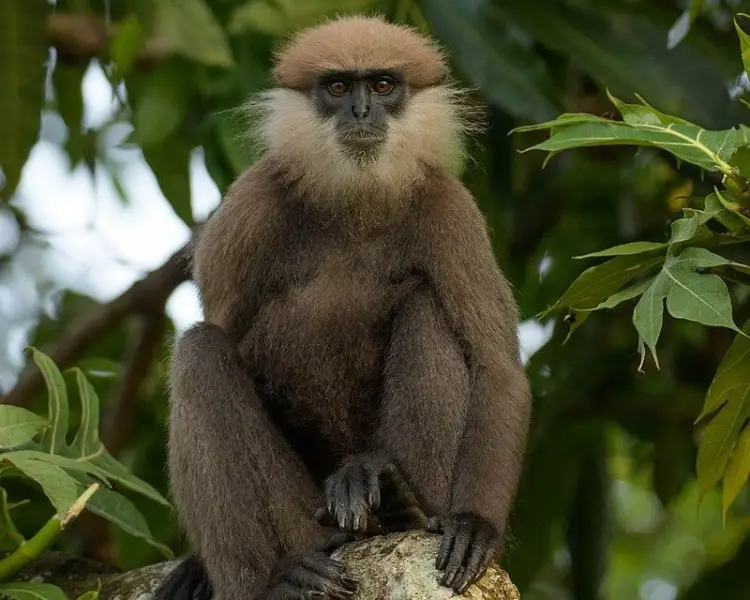
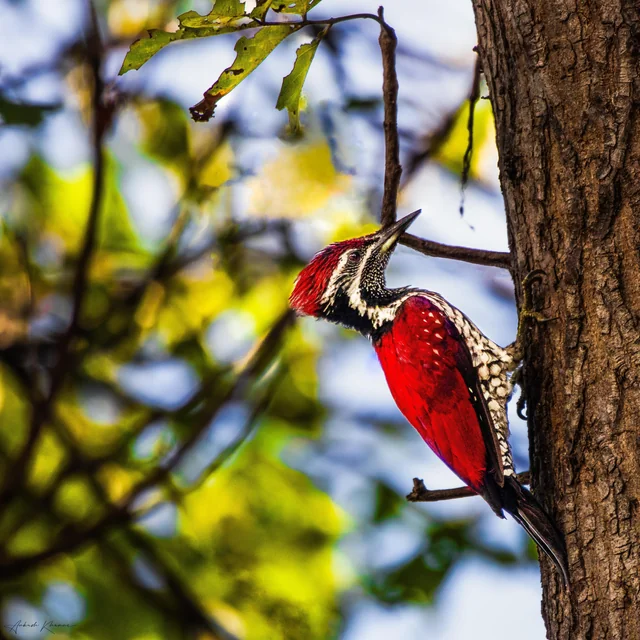
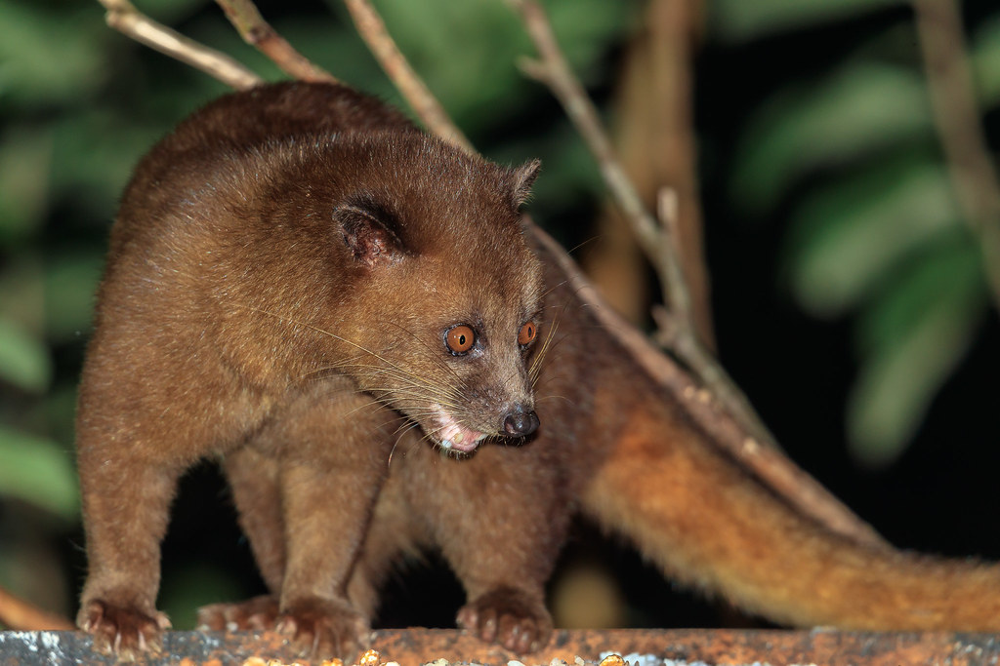
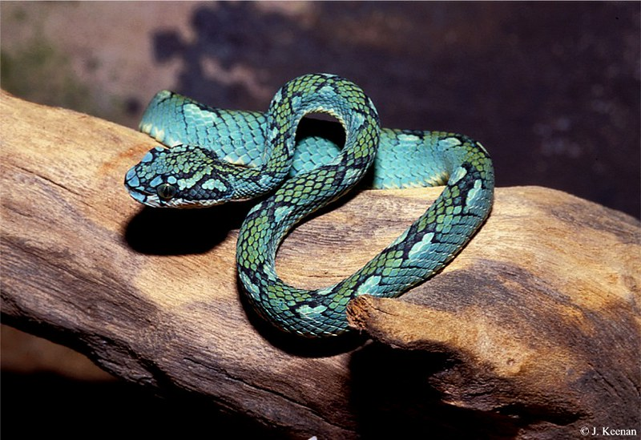
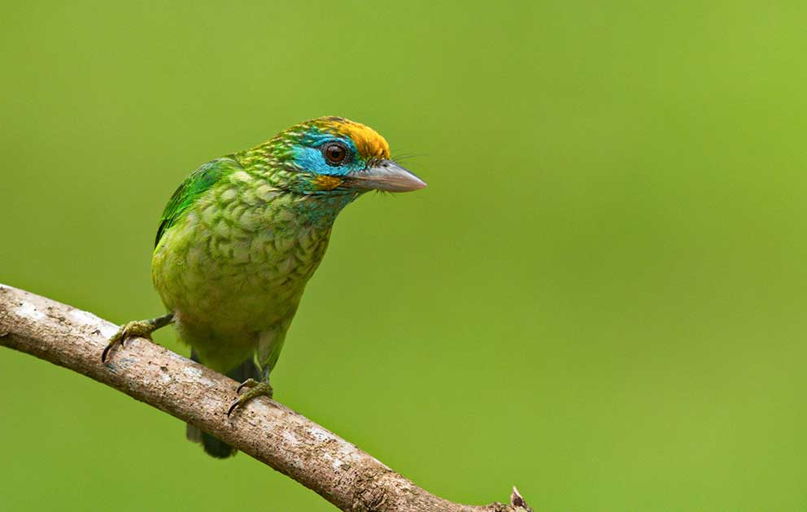
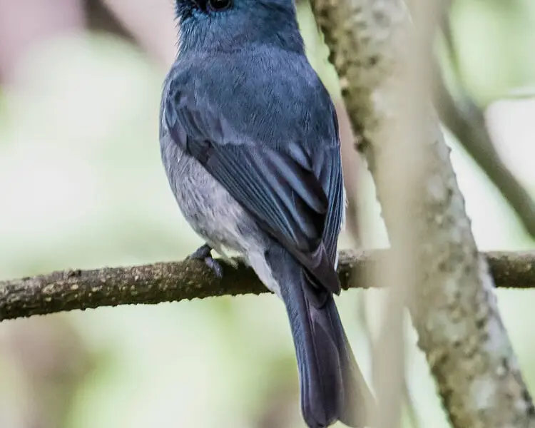

| Red Slender Loris |
The tiny, nocturnal red-slender loris (Loris tardigradus) is a strepsirrhine animal that is exclusive to Sri Lanka's rainforests. This is species number 22 out of 100 EDGE mammal species worldwide, and number 6 out of the 10 focus species that are thought to be the most globally endangered and evolutionarily different. There are now two recognized subspecies: L. t. tardigradus and L. t. nycticeboides. |
 |
| Purple-Faced Langur |
Semnopithecus vetulus, the formal name for the Sri Lankan purple-faced langur, is a critically endangered species of primates that is indigenous to Sri Lanka. Primarily found in the highland forests of the island, this Old World monkey is an arboreal species distinguished by its dark fur and stunning purple face. These langurs are essential to preserving ecological equilibrium because they eat primarily plants. To protect this distinctive and vibrant monkey species, conservation measures are crucial as habitat loss and fragmentation represent serious challenges to their survival. |
 |
| Red-backed Flameback |
Dinopium psarodes, as it is scientifically called, is a remarkable species of woodpecker that is unique to the island of Sri Lanka. Easily identified by its vivid red back, this bird lives in forests and wooded places. It uses its powerful beak to pierce tree trunks to obtain insects and larvae. Its unique look and steady drumming make it a fascinating and recognizable member of Sri Lanka's birdlife. |
 |
| Golden palm civet |
Paradoxurus zeylonensis, the Sri Lankan golden palm civet, is a tiny carnivorous mammal that is native to the country. This rare and nocturnal animal, which has black markings on its golden fur, mostly lives in the lowland jungles of the nation. The civet, which is known for living in trees, eats insects, fruits, and small mammals. Unfortunately, habitat degradation and poaching pose risks to the species, underscoring the significance of conservation efforts for this unusual mammal found in Sri Lanka. |
 |
| Trimeresurus Trigonocephalus |
The poisonous Trimeresurus trigonocephalus, also referred to as the Sri Lankan Pit Viper, is indigenous to the country's lush jungles. Its unusually shaped triangular head and vivid green coloration let it blend in with its surroundings. This species, which is well-known for its strong hemotoxic venom, mostly feeds on small mammals and birds. The Sri Lankan Pit Viper, although poisonous, is an important component of the ecosystem's ecological equilibrium. |
 |
| Jungle Fowl |
The national bird of Sri Lanka, the Gallus lafayettii, or Sri Lankan Junglefowl, is a visually stunning bird with vivid plumage and a standout red comb. It roams the meadows and deep forests of the island, where it is native. While females appear more disguised, males have vivid colors. The Sri Lankan Junglefowl, highly valued for its cultural significance, is a symbol of the country's abundant birdlife and great biodiversity. |
 |
| Yellow-fronted Barbet |
The colorful Sri Lankan Yellow-fronted Barbet (Psilopogon flavifrons) is unique to the country's verdant woodlands. Its bright plumage and prominent yellow forehead define its appearance. Its length is approximately 20 cm. With a diet consisting of fruits and insects, this species performs a key role in the ecology. To protect its unique ecosystem and guarantee its continuing survival, conservation activities are essential. |
 |
| Dull-Blue Flycatcher |
The dull-blue The Himalayas and Southeast Asia are home to the little passerine bird known as the flycatcher (Eumyias sordida). Its plumage is dull-blue in hue and shows signs of sexual dimorphism, with males having brighter colors. These insectivorous birds live in thick woodlands, frequently close to bodies of water. Known for their beautiful songs, they add to the vast diversity of birds in the areas they live in and enchant onlookers with their understated yet endearing presence. |
 |
| Toque Macaque (Macaca sinica) |
The upper coat of this species is golden brown, and it has a long tail. Although they are most comfortable in trees, they spend much of their time on the ground. They are also excellent swimmers. Being omnivores, their primary diet consists of leaves, fruits, seeds, and occasionally small birds. The toque macaque has a highly structured social hierarchy and occasionally lives in regiments of up to 40 people. Men and women are categorized into hierarchies. When troops grow significantly in number, interpersonal conflict and hostility lead to some members leaving the troop. After a gestation period of five to six months, the female macaque gives birth to a single offspring, with an average inter-offspring gap of eighteen months. When young, the progeny clings to |
 |